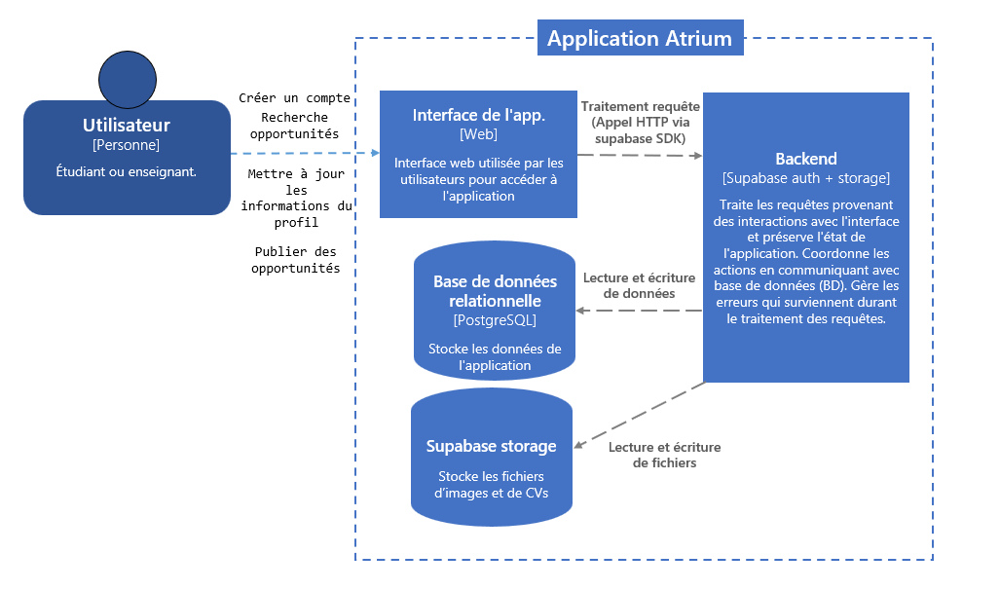

Plateforme de partage d'opportunités académiques
Mohamed Terbaoui & Joseph Finan
Superviseur: Louis-Edouard Lafontant
Plan
- Contexte et problématique
- Objectifs et utilisateurs
- Architecture et technologies
- Structure de la base de données
- Fonctionnalités implémentées
- Processus de développement
- Démonstration en direct
- Tests utilisateurs
- Défis et solutions
- Résultats et perspectives
- Conclusion
Contexte
-
Les étudiants cherchent des opportunités (stages, recherche,
projets)
- Les professeurs disposent d'informations dispersées
- Pas d'outil centralisé pour faciliter la mise en relation
Problématique
- Canaux de communication multiples et fragmentés
- Difficulté d'accès aux opportunités
-
Manque de visibilité sur les disponibilités des professeurs
Objectifs
- Créer un hub centralisé d'informations
- Faciliter la recherche d'opportunités pour les étudiants
-
Permettre aux professeurs de publier leurs opportunités facilement
-
Favoriser la communication directe (pas de gestion de
candidatures)
Utilisateurs
Étudiants
Recherchent et consultent les opportunités
Professeurs
Publient opportunités et disponibilités
Administration
Matching entre étudiants et professeurs
Architecture du système
Architecture client-serveur moderne

Stack technologique
| Technologie |
Rôle |
| React + TypeScript |
Frontend modulaire et typé |
| TailwindCSS |
Stylisation moderne |
| Supabase |
Backend (Auth + DB + Storage) |
| React Router |
Navigation |
Structure de la base de données
PostgreSQL via Supabase avec modèle Entité-Association
Choix de design
-
Supabase: Auth intégrée + RLS (Row Level
Security)
-
Tables principales: Étudiants, Professeurs,
Opportunités
-
Relations: Liens entre utilisateurs et
opportunités
-
Sécurité: Policies pour contrôler l'accès aux
données
-
Scalabilité: Structure modulaire permettant
l'évolution
Fonctionnalités implémentées
- Authentification (signup/login) sécurisée
- Gestion des profils (étudiants et professeurs)
- Publication et modification d'opportunités
- Recherche et filtrage avancés
- Interface responsive (mobile, tablette, desktop)
- Contact direct via email
Processus de développement
-
Semaines 1-4: Analyse et prototypage (Figma)
-
Semaines 5-7: Conception BD et architecture
-
Semaines 8-9: Setup technique et première
implémentation
- Semaines 10-12: Fonctionnalités complètes
-
Semaine 13: Tests utilisateurs et finalisation
Démonstration
Flow utilisateur
(Démo en direct de l'application déployée)
plateforme Atrium
Défis techniques
- Maîtrise de Supabase (RLS, triggers, policies)
- Synchronisation auth.users avec tables personnalisées
- Optimisation du responsive design
- Structure modulaire du code React
Résultats
- Application web fonctionnelle et déployée
- Bonne interface visuelle mais perfectible
- Architecture évolutive et maintenable
- Objectifs initiaux atteints
Tests utilisateurs
Retours et suggestions collectés
Améliorations suggérées
-
Bouton pour remonter rapidement quand beaucoup d'opportunités
- Tri par pertinence selon les compétences de l'étudiant
- Ajout d'images aux opportunités
- Filtres par type d'opportunité
- Meilleur feedback lors de mises à jour de profil
Problèmes identifiés
- Ralentissements lors du chargement des profils
- Erreurs silencieuses (ex: cours non ajoutés sans message)
- Pas de vérification d'email
Prochaines Fonctionnalités
- Système de notifications
- Intégration API externes (Teams)
- Statistiques et analytics pour les professeurs
- Système de favoris pour les étudiants
- Recommandations personnalisées
- Gestion automatique de l'archivage des opportunités
-
Système de matching pour les admin ainsi que pour les professeurs
Conclusion
Ce projet nous a offert une expérience concrète du cycle de
développement d'une application web moderne, du prototypage
initial à la validation utilisateur.
Merci pour votre attention!
Questions?